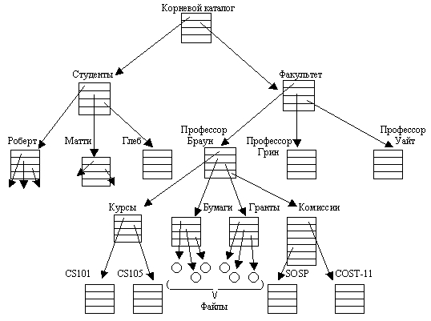
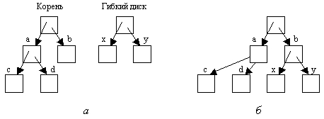

Файлы
Файловая система — это еще одно ключевое понятие, поддерживаемое виртуально
всеми операционными системами. Как было замечено ранее, основной функцией операционной
системы является скрытие особенностей дисков и других устройств ввода-вывода
и предоставление пользователю понятной и удобной абстрактной модели независимых
от устройств файлов. Системные вызовы очевидно необходимы для создания, удаления,
чтения или записи файлов. Перед тем как прочитать файл, его нужно разместить
на диске и открыть, а после прочтения его нужно закрыть. Все эти функции осуществляют
системные вызовы.
Предоставляя место для хранения файлов, операционные системы используют понятие
каталога (directory) как способ объединения файлов в группы. Например, студент
может иметь по одному каталогу для каждого изучаемого им курса (для программ,
необходимых в рамках этого курса), каталог для электронной почты, и еще один
— для своей домашней web-страницы. Для создания и удаления каталогов также необходимы
системные вызовы. Они же обеспечивают перемещение существующего файла в каталог
и удаление файла из каталога. Содержимое каталогов могут составлять файлы или
другие каталоги. Эта модель создает структуру — файловую систему, — как показано
на рис. 1.14.
Иерархии процессов и файлов организованы в виде деревьев, но на этом сходство
заканчивается. Иерархия процессов обычно не очень глубока (в ней редко бывает
больше трех уровней), тогда как файловая структура достаточно часто имеет четыре,
пять или даже больше уровней в глубину. Иерархия процессов обычно живет очень
недолго, как правило, несколько минут, иерархия каталогов может существовать
годами. Принадлежность и защита также различны для процессов и файлов. Обычно
только родительский процесс может управлять или даже просто иметь доступ к дочернему
процессу, однако практически всегда существует механизм, позволяющий читать
файлы и каталоги не только владельцу файла, а более широкой группе пользователей.
Каждый файл в иерархии каталогов можно определить, задав его имя пути, называемое
также полным именем файла. Путь начинается из вершины структуры каталогов, называемой
корневым каталогом. Такое абсолютное имя пути состоит из списка каталогов, которые
нужно пройти от корневого каталога к файлу, с разделением отдельных компонентов
косой чертой. На рис. 1.14 путь к файлу CS101 выглядит как /Faculty/Prof.Brown/Courses/CS101.
Первая косая черта говорит о том, что этот путь — абсолютный, то есть начинается
от корневого каталога. В MS-DOS и Windows для разделения компонентов вместо
символа косой черты используется обратная косая черта (\). Тогда этот путь будет
выглядеть так: \Faculty\Prof.Brown\Courses\CS101. В нашей книге для записи
пути мы в основном будем использовать соглашения UNIX.

Рис. 1.14. Файловая система факультета университета
В каждый момент времени у каждого процесса есть текущий рабочий каталог,
в котором ищутся пути файлов, не начинающиеся с косой черты. Например,
если на рис. 1.14 /Faculty/Prof.Brown является рабочим каталогом, то
использование пути Courses/CS101 даст тот же самый файл, что и абсолютный
путь, написанный выше. Процессы могут изменять свой рабочий каталог, используя
системные вызовы.
Перед тем как прочесть или записать файл, его нужно открыть, в это же время
проверяется разрешение доступа. Если доступ разрешен, система возвращает небольшое
целое число, называемое дескриптором файла и используемое в последующих
операциях. Если доступ запрещен, то возвращается код ошибки.
Другое важное понятие в UNIX — это установленная (смонтированная) файловая
система. Почти все персональные компьютеры имеют один или два дисковода для
гибких дисков, куда можно вставить и откуда можно вынуть диск. Чтобы предоставить
возможность общения со сменными носителями (включая компакт-диски), UNIX позволяет
присоединять файловую систему сменного диска к главному дереву. Рассмотрим ситуацию
на рис. 1.15, а. Перед вызовом системной процедуры mount корневая файловая
система на жестком диске и вторая файловая система на гибком диске существуют
раздельно и никак не связаны между собой.

Рис. 1.15. Перед установкой файлы на диске 0 недоступны
(а); после монтирования
они становятся частью общей файловой структуры (б)
Однако файлы на гибком диске нельзя использовать, потому что для них невозможно
определить путь. UNIX не позволяет присоединять к началу пути название диска
или его номер, так как это привело бы к жесткой зависимости от устройств, которой
операционная система должна избегать. Вместо этого системный вызов mount позволяет
присоединять файловую систему на гибком диске к корневой файловой системе в
том месте, где этого захочет программа. На рис. 1.15, б файловая система
гибкого диска была установлена в каталог b, таким образом, обеспечен
доступ к файлам по путям /b/x/ и /b/y. Если каталог b содержал
какие-либо файлы, они будут недоступны, пока смонтирован гибкий диск, так как
теперь /b ссылается на корневой каталог гибкого диска. (Невозможность
доступа к этим файлам не так страшна, как кажется с первого взгляда: файловые
системы почти всегда устанавливаются в пустые каталоги.) Если система содержит
несколько жестких дисков, они все могут быть встроены в одно дерево таким же
образом.
Еще одно важное понятие в UNIX — это специальный файл. Специальные
файлы служат для того, чтобы устройства ввода-вывода выглядели как файлы. При
этом можно прочесть информацию из специальных файлов или записать ее туда с
помощью тех же самых системных вызовов, что используются для чтения и записи
файлов. Существует два вида специальных файлов: блочные специальные файлы
и символьные специальные файлы. Блочные специальные файлы используются для
моделирования устройств, состоящих из набора произвольно адресуемых блоков,
таких как диски. Открывая блочный специальный файл и читая, скажем, блок 4,
программа может напрямую получить доступ к четвертому блоку на устройстве, без
обращения к содержащейся на нем файловой системе. Таким же образом символьные
специальные файлы используются для моделирования принтеров, модемов и других
устройств, которые принимают или выдают поток символов. По соглашению специальные
файлы хранятся в каталоге /dev. Например, /dev/lp может быть строковым
принтером.